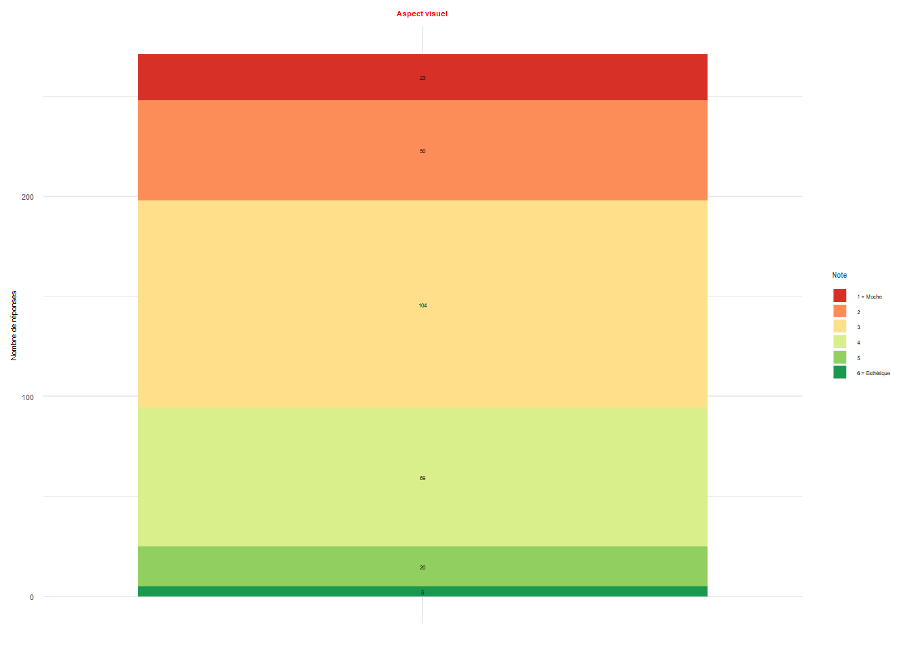
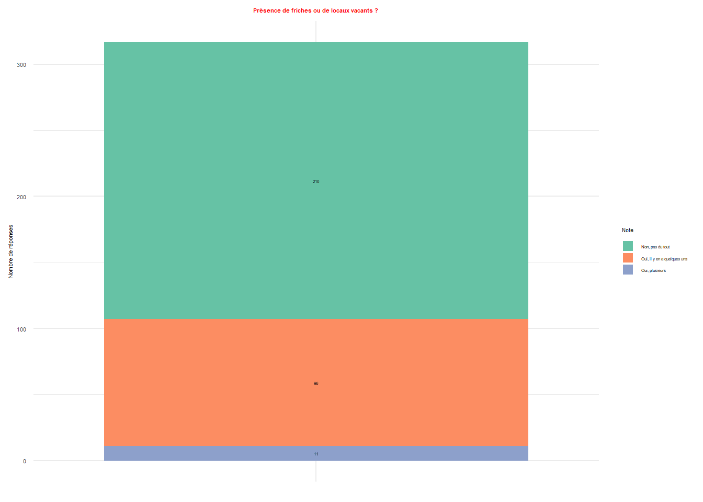

3. PERCEPTION GÉNÉRALE DE LA ZONE D’ACTIVITÉ DE MARTICOT
La perception qu’ont les salariés de cette zone d’activité offre un éclairage essentiel sur son fonctionnement quotidien, sa qualité d’aménagement et son attractivité en tant que lieu de travail. Au-delà des données économiques, il s’agit ici de comprendre comment la zone est vécue par ceux qui la pratiquent chaque jour : comment ils perçoivent ses qualités, ses manques, et les conditions qu’elle offre en matière de confort, d’accessibilité, de services ou d’ambiance. Notre objectif est de dresser un portrait sur les qualités de la zone mais aussi sur ces points faibles afin de cibler des axes d’améliorations mais surtout de comprendre la perception globale des salariés.

3.1 Dans quelle mesure les salariés trouvent la zone d’activité de Marticot ?
Sous forme de tableau, les répondants devaient donner une note d’appréciation de 1 à 6 sur différent adjectif qualificatif de la zone. L’objectif est de faire ressortir les caractéristiques globales pour mieux identifier les points faibles.
Les résultats montrent que la zone est perçue de manière nuancée. Elle est jugée moyennement attractive (moyenne 3,15/6) avec un écart-type de 1,24, ce qui traduit une dispersion modérée des réponses. Pour la convivialité on retrouve une moyenne plus basse de (2,92/6) avec 69,4% des répondants ayant donné une note entre 1 et 3. L’accessibilité est la modalité la moins bien évaluée avec une tendance négative (2,37/6) en moyenne, confirmant un ressenti de difficulté d’accès. À l’inverse, l’isolement est plutôt marqué (3,61/6), ce qui traduit une impression de coupure vis-à-vis de son environnement urbain. Cependant l’écart type de 1,64 (le plus élévé des 5) indique tout de même une importante dispersion. Avec 20,9% pour une note de 3 et 21,8% pour une note de 5. Cela peut traduire un isolement à relativiser. Enfin, la zone n’est pas jugée particulièrement obsolète (2,93/6), avec 71,9% des répondants ayant donné une note entre 1 et 3. Ces résultats traduisent une image mitigée de la zone de Marticot : si elle conserve une certaine attractivité économique, son manque de convivialité et surtout ses problèmes d’accessibilité apparaissent comme des points faibles majeurs. Le ressenti d’isolement dispersé renforce l’idée d’une zone fonctionnelle mais avec peut-être des problématiques d’intégration à son territoire.
3.2 Ressentez-vous des nuisances dans la ZAE de Marticot ?
Sur la question des nuisances, nous avons voulus savoir quels pourrez être les éléments pouvant rendre l’expérience négative dans le zone, ainsi impacter le quotidien des salariés. Sur l’ensemble des répondants, on retrouve une majorité de personnes ne trouvant pas que la zone d’activité de Marticot soit associés à une quelconque nuisance (71,4%). Cependant 27,7% soit presque 1/3 estiment ressentir des nuisances.
Dans l’élaboration de notre questionnaire, nous avons prédéfinis des catégories qui nous semblaient pertinentes et englobantes ; Les nuisances liées :
- À l’environnement bruyant
- À la circulation de poids lourd
- Au trafic routier et à la sécurité
- Aux odeurs
- À l’accessibilité
- Les nuisances
A savoir que les 3 dernières catégories ont étés rajoutés après avoir analyser les réponses libres des personnes ayant choisis de préciser dans « autre ».
Les résultats mettent en évidence une perception différenciée des nuisances parmi les salariés interrogés. Trois types de nuisances ressortent nettement :
- le trafic et la sécurité, cités par plus des trois quarts des répondants (77,8 %) ;
- le bruit, mentionné par 60,0 % ;
- et la circulation des poids lourds, évoquée par 53,3 %.
Ces résultats traduisent une sensibilité forte des usagers à la circulation routière et à ses conséquences directes, qu’il s’agisse du bruit, du trafic dense ou des poids lourds. À l’inverse, l’odeur, l’accessibilité et la pollution apparaissent comme beaucoup plus marginales comme nuisances. Mais celles-ci ont étés rajoutés à partir de la case autre qui permettaient de préciser d’autres nuisances non cités. Ainsi, les nuisances perçues dans la zone d’activité sont avant tout liées aux conditions de circulation et de sécurité, tandis que les nuisances environnementales plus classiques (pollution de l’air, odeurs) sont relativement peu mentionnées.
3.3 Selon vous la zone d’activité de Marticot est caractérisée par :
L’analyse des réponses montre une perception contrastée des différentes dimensions de la zone d’activité. Les salariés jugent positivement la qualité du réseau et la présence d’espaces verts, qui recueillent les meilleures moyennes (respectivement 4,23 et 4,17 sur 6). La majorité des répondants s’accorde à reconnaître ces atouts, même si l’écart-type un peu plus élevé pour les espaces verts laisse apparaître des avis plus dispersés selon les secteurs ou les usages.
La sécurité et la propreté sont évaluées de manière correcte, autour de 3,8 en moyenne. Ces résultats traduisent une appréciation globalement satisfaisante, (61,4% des notes allant de 4 à 6 pour la sécurité et 61,2% pour la propreté) mais il faut tout de même nuancer : certains salariés estiment ces dimensions convenables, quand d’autres expriment des réserves, ce que confirme la dispersion modérée des réponses.
En revanche, d’autres critères apparaissent beaucoup plus faibles. Les cheminements obtiennent une moyenne de 3,08, ce qui traduit une appréciation mitigée et assez hétérogène : les salariés sont partagés entre une relative fonctionnalité et des insuffisances perçues. Plus marquant encore, la convivialité (2,31) et la présence de services (2,38) ressortent comme les points les plus déficitaires. Les réponses sont ici fortement concentrées dans les modalités basses, ce qui montre un consensus autour d’un manque d’espaces favorisant d’une certaine manière la sociabilité et l’interaction grâce à des équipements de proximité dans la zone.
En résumé, si la ZA de Marticot est reconnue pour ses atouts en termes d’infrastructures et de cadre paysager, elle souffre d’un déficit marqué en services et en convivialité. La sécurité et la propreté sont jugées acceptables mais non pleinement satisfaisantes, et les cheminements apparaissent comme un élément à appronfondir/ valoriser. Cette lecture croisée des moyennes, des fréquences et de la dispersion des réponses met donc en lumière une zone perçue comme fonctionnelle et structurée, mais insuffisamment pensée pour le quotidien et la sociabilité des salariés.

3.4 Dans quelle mesure trouvez-vous la zone d’activité de Marticot ?

Row
Row
